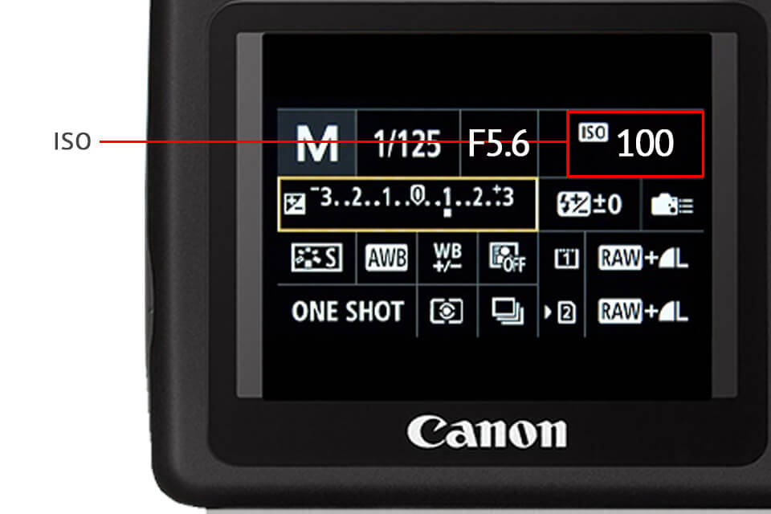
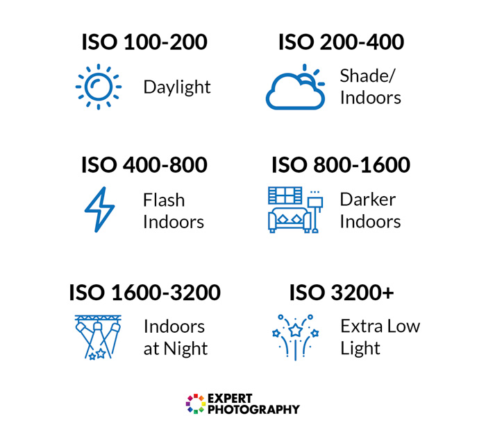

ISO
ISO is one of the three pillars of photography (the other two being shutter speed and aperture), and it has a major effect on your images. How does camera ISO affect your images? In this article, we will introduce ISO for beginners and explain how to use it effectively for the best possible results.
What is ISO?
In very basic terms, ISO is simply a camera setting that will brighten or darken a
photo. As you increase your ISO number, your photos will grow progressively brighter. For that reason, ISO can
help you capture images in darker environments, or be more flexible about your aperture and shutter speed
settings.
ISO stands for “International Organization for Standardization”
However, raising your ISO has consequences. A photo taken at too high of an ISO will show a lot of grain, also
known as noise, and might not be usable. So, brightening a photo via ISO is always a trade-off. You should only
raise your ISO when you are unable to brighten the photo via shutter speed or aperture instead (for example, if
using a longer shutter speed would cause your subject to be blurry).

When to use Low and High ISO:
As discussed above, you should always try to stick to the lowest ISO (base ISO) of your camera, which is typically ISO 100 or 200, whenever you can. If there is plenty of light, you are free to use a low ISO and minimize the appearance of noise as much as possible.
